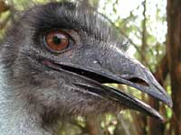

{kind=link}
Голубь

Благодаря длинной шее
страус, наверно, может
повернуть голову назад
Голуби живут у нас на чердаке, и их довольно легко фотографировать. Этот голубь сидит на перилах балкона на фоне соседнего дома. Он сидит спиной к нам симметрично, так что из за спины видны обе лапки. При этом голубь повернул голову в профиль, как на египетских рисунках.
Многие животные (например, кошка) могут повернуть голову почти на 180 градусов. Человек не может даже на 90. Наверно, это получилось потому, что голубю и кошке требуется такой поворот головы для самообслуживания (почистить себе спину), а человек для этого использует руки.
{kind=link}
На взлёте
Машущий полёт - это совмещение функций несущего крыла, как у любого самолёта - когда птица парит, и тянущего пропеллера, как у винтового самолёта - когда она машет крыльями.
Голуби отрываются от земли, делая взмахи вперёд и загребая воздух, как пловец воду.
Но когда птицы "взлетают" с дерева, они расправляют крылья и просто прыгают вниз. Городские голуби часто повреждают себе лапки взлетая таким образом с крыш, металлических мачт, других искусственных объектов. В этих конструкциях бывают дырочки, и лапки голубя могут в них застрять. Приучая голубя взлетать с ветки дерева, в которой нет таких дырочек, эволюция не подумала, что голубям придётся жить в городах.